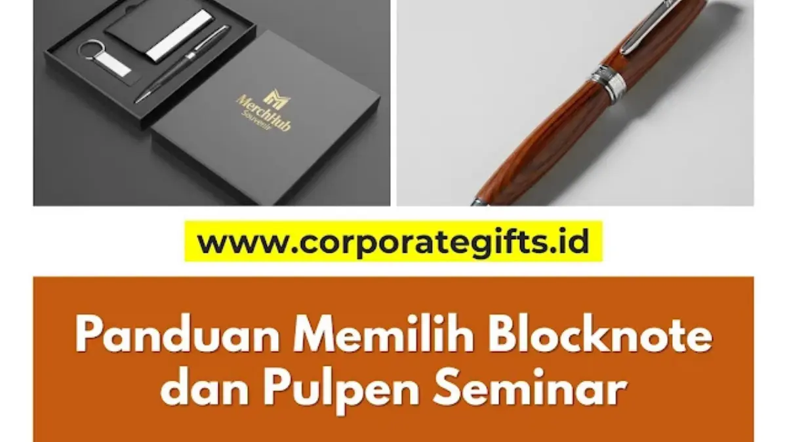

Corporate Gifts ID - Jika tas adalah kesan pertama dari sebuah paket seminar, maka blocknote dan pulpen adalah pengalaman intinya. Keduanya merupakan instrumen esensial yang memastikan peserta dapat merangkum wawasan penting dengan nyaman, sekaligus berfungsi sebagai media promosi merek jangka panjang bagi institusi penyelenggara.
Poin Kunci Memilih Alat Tulis Seminar Kit:
- Ergonomi Menulis: Blocknote ukuran A5 dengan jilid kawat spiral ganda (360 derajat) memberikan fleksibilitas mencatat tertinggi.
- Ketebalan Kertas: Standar kertas HVS 70-80 gsm efektif mencegah rembesan tinta (bleeding) saat menggunakan pulpen gel atau highlighter.
- Keandalan Pulpen: Bodi plastik ABS solid atau metal kokoh dengan tinta lancar menjaga kredibilitas dan citra profesional acara.
- Investasi Branding: Desain selaras dan logo presisi membuat buku catatan terus digunakan di kantor peserta jauh setelah acara usai.
Terlalu sering komponen vital ini diabaikan dan dipilih hanya berdasarkan pertimbangan harga termurah. Dampaknya, peserta kerap mengalami kendala tinta macet di tengah presentasi penting atau lembaran kertas tipis yang tembus pandang. Padahal, menyediakan alat tulis yang berkualitas adalah bentuk penghormatan nyata kepada peserta sekaligus cerminan profesionalisme panitia pelaksana.
Melalui ulasan komprehensif ini, kami membedah standar teknis dalam memilih blocknote dan pulpen custom logo yang benar-benar fungsional, tahan lama, dan mampu mengangkat reputasi acara korporat Anda.
Urgensi Kualitas Alat Tulis dalam Seminar Kit
Mengalokasikan anggaran secara tepat pada souvenir alat tulis seminar memberikan rentetan manfaat strategis yang melampaui biaya produksinya:
- Mendukung Kelancaran Interaksi Peserta: Peserta yang memiliki sarana mencatat tanpa kendala teknis akan jauh lebih fokus, responsif, dan mudah menyerap poin presentasi pembicara.
- Mencerminkan Perhatian pada Detail (Attention to Detail): Kerapian jilid buku, ketebalan kertas, dan kenyamanan genggaman pulpen secara psikologis membangun citra institusi yang teliti dan kredibel.
- Meningkatkan Persepsi Nilai (Perceived Value): Blocknote dengan sampul kokoh berlaminasi halus serta pulpen berbobot mantap terasa jauh lebih prestisius dibanding perlengkapan seadanya.
- Media Branding Jangka Panjang yang Aktif: Tidak seperti konsumsi atau pamflet yang lekas habis, buku catatan seminar akan dibawa pulang ke meja kantor peserta dan digunakan berbulan-bulan, menghadirkan paparan visual logo berulang kali.
Panduan Memilih Blocknote Seminar yang Ergonomis
Desain sampul yang memikat hanyalah pintu masuk. Kunci kenyamanan menulis terletak pada tiga aspek teknis utama:
1. Pilihan Ukuran: Standar A5 vs. Compact A6
- Ukuran A5 (14.8 x 21 cm): Dikenal sebagai standar emas perlengkapan seminar korporat. Area kertasnya sangat memadai untuk merangkum diagram, tabel, dan uraian panjang, namun tetap proporsional saat diselipkan ke dalam tas jinjing.
- Ukuran A6 (10.5 x 14.8 cm): Opsi berdimensi saku yang sangat praktis dan hemat anggaran. Sangat direkomendasikan untuk sesi workshop lapangan, pameran (expo), atau konferensi yang menuntut mobilitas tinggi.
2. Metode Jilid: Spiral Kawat vs. Lem Panas (Perfect Binding)
- Jilid Spiral (Ring Kawat Ganda): Pilihan paling fungsional karena buku dapat dilipat penuh 360 derajat. Peserta dapat mencatat leluasa bahkan saat duduk di kursi tanpa meja tulis.
- Jilid Lem Panas (Perfect Binding): Menampilkan punggung buku (spine) yang rapi layaknya novel profesional. Kelemahannya, buku cenderung kaku dan sulit dibuka mendatar secara sempurna jika kertasnya terlalu tebal.
3. Kualitas Kertas Isi dan Desain Sampul
- Kertas Isi (Inner Pages): Standar minimal yang direkomendasikan adalah kertas HVS putih bersih dengan gramasi 70 hingga 80 gsm. Ketebalan ini menjamin tinta tidak tembus ke halaman sebaliknya saat peserta menggunakan pulpen basah atau penanda stabilo.
- Sampul Luar (Cover): Gunakan material Art Carton tebal berbobot 210 hingga 260 gsm. Berikan sentuhan finishing laminasi Doff untuk estetika matte elegan anti-sidik jari, atau laminasi Glossy untuk kilau warna cetak yang tajam dan dinamis.

Pilihan material bodi pulpen plastik ABS kokoh dan metal elegan yang dipadukan dengan blocknote cover laminasi doff.
Kriteria Pulpen Promosi Anti-Macet & Berkualitas
Pulpen promosi yang macet saat sesi pencatatan adalah keluhan paling umum peserta. Untuk menghindari risiko tersebut, perhatikan faktor material dan teknik branding berikut:
1. Material Bodi: Plastik ABS Solid vs. Metal Eksekutif
- Bahan Plastik ABS: Pilihan paling ekonomis dan populer untuk acara berskala masif. Hindari plastik tipis yang mudah retak; pilih formulasi plastik ABS solid yang memberikan bobot stabil saat digenggam tangan.
- Bahan Metal Alumunium / Stainless: Menghadirkan kesan berkelas, mantap, dan dingin saat disentuh. Sangat pas dialokasikan untuk jajaran pembicara narasumber, tamu kehormatan VIP, atau dipadukan dalam gift set eksekutif.
2. Pilihan Teknik Kustomisasi Logo
- Sablon Screen Printing: Teknik efisien untuk mengaplikasikan logo multi-warna pada bodi pulpen plastik. Pastikan vendor memakai tinta industri berkepadatan tinggi agar tidak mudah pudar oleh gesekan tangan dan keringat.
- Grafir Sinar Laser (Laser Engraving): Standar emas untuk pulpen bodi metal. Sinar laser mengikis lapisan permukaan secara mikro sehingga logo tercetak abadi, presisi tinggi, dan tidak akan pernah terkelupas.
Tabel Perbandingan Spesifikasi Blocknote & Pulpen
Berikut rangkuman spesifikasi teknis dan pertimbangan fungsional antara varian ekonomis dan paket premium:
| Komponen Alat Tulis | Pilihan Standar (Ekonomis) | Pilihan Eksklusif (Premium) | Keunggulan Fungsional Utama |
|---|---|---|---|
| Dimensi Blocknote | Ukuran A6 (10.5 x 14.8 cm) | Ukuran A5 (14.8 x 21 cm) | A5 leluasa merangkum; A6 ringkas dibawa bergerak |
| Metode Jilid | Jilid Lem Panas (Perfect Binding) | Spiral Kawat Ganda (Double Ring Wire) | Spiral dapat dilipat 360 derajat tanpa tatakan meja |
| Kertas Isi & Cover | HVS 70 gsm + Art Carton 210 gsm | HVS 80 gsm + Hardcover Kulit PU / Doff 260 gsm | Mencegah tinta rembes (bleeding) dan cover tidak lecek |
| Bodi & Tinta Pulpen | Plastik ABS Solid + Ballpoint 0.7 mm | Bodi Metal Aluminium + Gel Ink 0.5 mm | Goresan tinta mulus, pekat, dan nyaman digenggam |
| Aplikasi Logo | Sablon 1-2 Warna Tahan Gesek | Grafir Laser Permanen / UV Full Colour | Hasil visual tajam, presisi, dan tidak mudah luntur |
Catatan: Pastikan ukuran dimensi blocknote yang dipilih cocok dengan ruang kompartemen tas seminar kit yang Anda pesan.
Strategi Efisiensi Anggaran & Desain Terpadu
Merumuskan strategi pengadaan alat tulis yang berkualitas tanpa membebani anggaran operasional panitia dapat dicapai melalui taktik cerdas berikut:
- Gunakan Palet Desain Terpadu: Selaraskan warna dasar pulpen dengan grafis sampul blocknote. Identitas visual yang serasi langsung menaikkan kelas acara di mata peserta.
- Manfaatkan Jumlah Halaman Proporsional: Untuk agenda 1 hingga 2 hari, ketebalan 30 hingga 50 lembar sudah sangat cukup. Mengurangi lembaran berlebih menghemat biaya cetak dan ongkos kirim logistik secara signifikan.
- Pesan Jauh Hari Sebelum Pelaksanaan: Alokasikan waktu pengerjaan 3 hingga 4 minggu sebelum acara berlangsung guna menghindari biaya tambahan pesanan kilat (rush order fee).
Memilih alat tulis yang tepat bukan sekadar urusan perlengkapan administrasi, melainkan wujud apresiasi nyata atas waktu yang diluangkan peserta. Dengan alat tulis yang prima, setiap gagasan yang dicatat akan selalu terhubung dengan nama baik institusi Anda.
Pertanyaan Seputar Alat Tulis Seminar (FAQ)

Ditulis oleh: Vendor Souvenir Kantor
Head of Corporate Merchandise DevelopmentPraktisi pengadaan merchandise korporat dan seminar kit profesional di CorporateGifts.ID. Berpengalaman lebih dari satu dekade membantu perusahaan BUMN, perbankan, dan institusi nasional dalam merancang alat tulis promosi yang fungsional dan berdampak tinggi.
Lihat Profil Lengkap & Panduan Lainnya